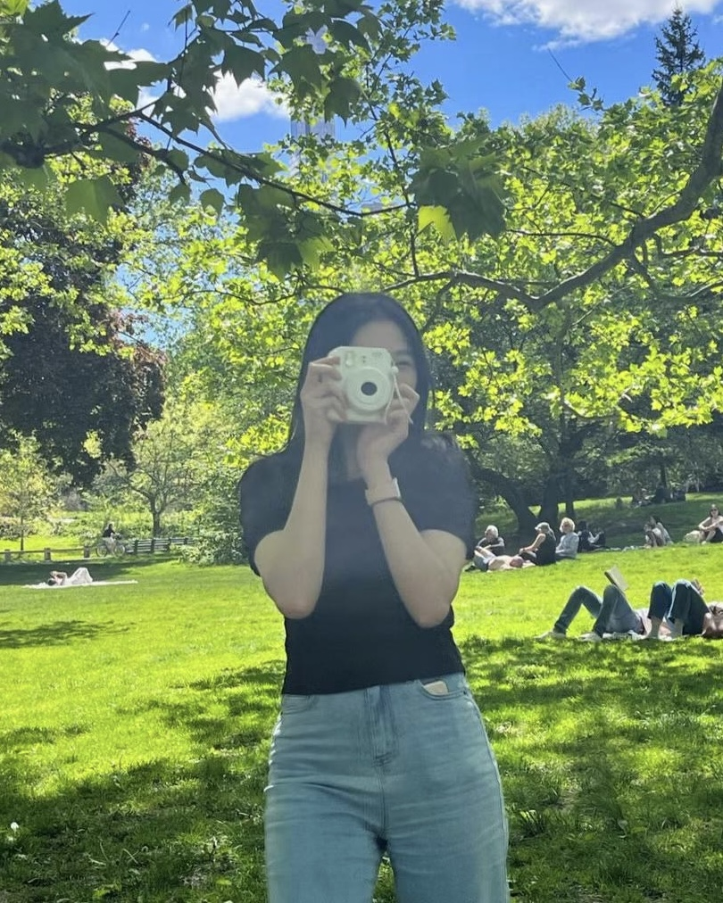
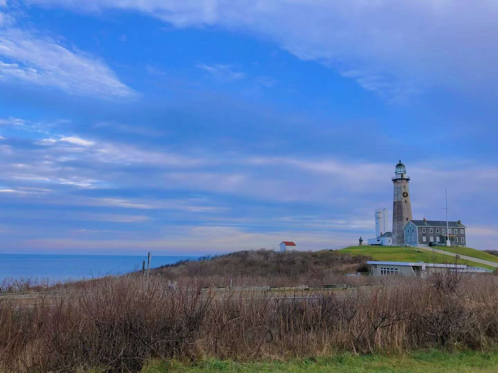

Sisi Chen
👋
Sisi is a UX design student working toward creating the goodliness of life and leveraging inclusive UX Design
Currently, she is a master's student at University of Michigan studying user experience research and design 🎨
Aside from design, Sisi plays piano, runs long distances, and loves baking and photography.

Education
University of Michigan
Master of Science in Information UX Experience Design Track
Relevant Coursework: Graphic Design, Introduction to Interaction Design, Fundamentals of Human Behavior
Experience
Michigan Medicine
Digital UX Design Intern
May 2023 - August 2023
Global China Connection (GCC)
Technology Associate
September 2020 - August 2021
Compu21 Institute
UX Researcher Intern
April 2020 - August 2021
Skills
Software & Tools
Procreate
Figma
Adobe Creative Suite
WordPress
Methods & Knowledge
Contextual Inquiry
User Research
Usability Testing
Prototyping
Favorite places

Disneyland
Orlando, FL

Sleeping Bear Dunes
Glen Arbor, MI

Montauk Lighthouse
Montauk, NY
Central Park
New York, NY

Antelope Canyon
Arizona
Horseshoe Bend
Arizona